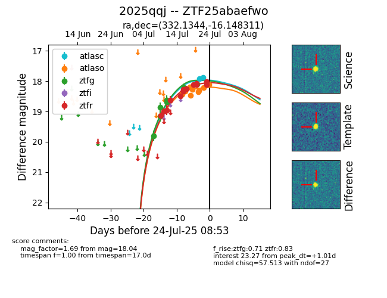

Target ZTF25abaefwo at 2025-07-24 08:53, see:
FINK: fink-portal.org/ZTF25abaefwo
Lasair: lasair-ztf.lsst.ac.uk/objects/ZTF25abaefwo
ALeRCE: alerce.online/object/ZTF25abaefwo
TNS: wis-tns.org/object/2025qqj
YSE: ziggy.ucolick.org/yse/transient_detail/2025qqj
alt names
ZTF25abaefwo (ztf,fink)
2025qqj (tns,yse)
coordinates:
equatorial (ra, dec) = (332.1344,-16.14831)
galactic (l, b) = (40.6026,-50.77649)
photometry
last atlasc=17.88, atlaso=18.12, ztfg=18.04, ztfr=18.12
2 atlasc, 9 atlaso, 8 ztfg, 13 ztfr detections
